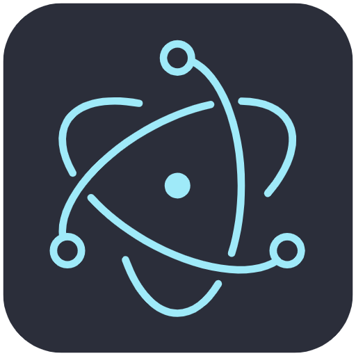

摘要
本研究提出一套面向求職面試情境的AI 即時助理，整合語音辨識（STT）、知識檢索（RAG）與生成式回覆建議。 系統流程採用「語音轉文字 → 語意檢索 → 回覆生成」三段式管線，並在前端提供三欄同步視圖，讓使用者同時觀察對話內容、AI 建議與知識來源。 實作結果顯示，此架構可在實務面試模擬中提升答題流暢度與重點覆蓋率。
Computer Science Week Competition Poster
以 Electron + React + FastAPI 建立即時面試輔助平台，聚焦語音理解精準度與回覆結構化品質

本研究提出一套面向求職面試情境的AI 即時助理，整合語音辨識（STT）、知識檢索（RAG）與生成式回覆建議。 系統流程採用「語音轉文字 → 語意檢索 → 回覆生成」三段式管線，並在前端提供三欄同步視圖，讓使用者同時觀察對話內容、AI 建議與知識來源。 實作結果顯示，此架構可在實務面試模擬中提升答題流暢度與重點覆蓋率。
以下三張圖由程式碼依據目前數據分析面板指標自動生成，模擬實驗當下截圖視覺。
流程圖由 JavaScript 以節點資料陣列動態建構與生成。